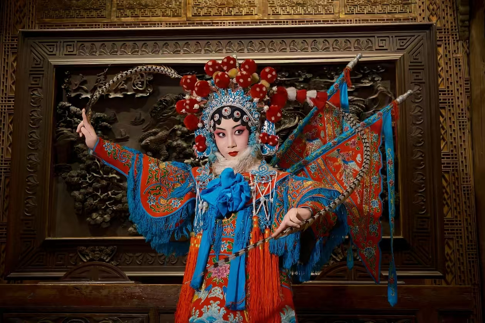

京剧又称平剧、京戏，是中国五大戏曲剧种之一，被视为中国国粹，是中国影响最大的戏曲剧种，分布地以北京为中心，遍及全国各地。京剧形成于清代乾隆年间，徽班进京后，融合了徽剧、汉剧、昆曲、秦腔等多种戏曲艺术，最终形成了京剧。
京剧的角色分为生、旦、净、丑四大行当，每个行当都有独特的表演程式和唱腔特点。京剧的表演形式包括唱、念、做、打四种基本功，唱腔以西皮、二黄为主，用胡琴和锣鼓等伴奏，旋律优美，韵味悠长。京剧的脸谱艺术更是独具特色，不同颜色的脸谱代表不同的人物性格，红色忠勇、黑色正直、白色奸诈、蓝色勇猛。
京剧的经典剧目有《贵妃醉酒》《霸王别姬》《空城计》《三岔口》《锁麟囊》等。梅兰芳、程砚秋、尚小云、荀慧生是京剧"四大名旦"，他们创造的梅派、程派、尚派、荀派艺术，至今仍被传承和发扬。来北京一定要去长安大戏院或梅兰芳大剧院看一场正宗的京剧，感受国粹的魅力。
推荐观看地点：长安大戏院、梅兰芳大剧院、正乙祠戏楼、湖广会馆
经典剧目：《贵妃醉酒》《霸王别姬》《空城计》《锁麟囊》
特点：国粹艺术，唱念做打，韵味悠长